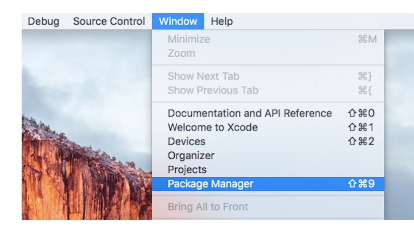
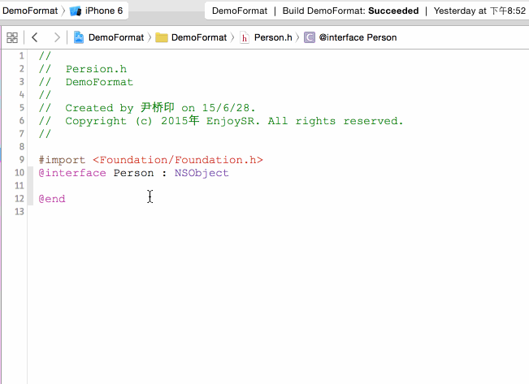
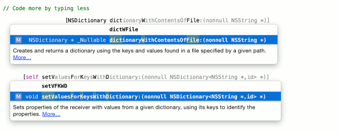
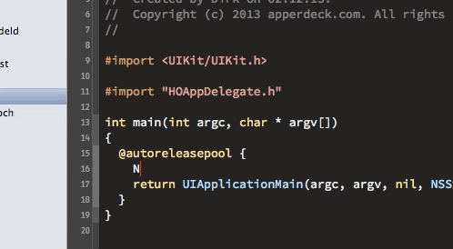
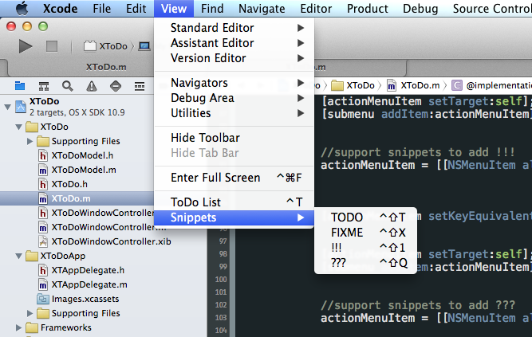

开始接触 Xcode 的插件的时候应该还在使用 Xcode5，那时候是通过下载插件源码，编译后使用的，后来升级到 Xcode6 发现很多插件不兼容，升级进度比较慢，插件冲突也比较厉害，一段时间后也就淡化了插件的使用。不知道为什么苹果官方为什么没有较规范的插件开发、管理流程，难道不知道 插件就是生产力 吗~ 前阵子因为 Sublime Text 的插件用起来各种顺心，忍不住又把 Xcode 的插件翻出来试试，感觉比以前顺畅多了，果然是时代在前进啊。
插件安装
Xcode插件大部分是以源码的形式传播，找到你喜欢的插件，下载源码，然后编译插件，将生成的 xcplugin 拷贝到 Xcode 的插件目录，重启 Xcode 即可。若插件无效，可能是还没有适配到你使用的 Xcode，试试 Xcode升级适配。
插件目录
|
Xcode升级适配
获取待适配版本 Xcode 的 UUID
defaults read /Applications/Xcode.app/Contents/Info.plist DVTPlugInCompatibilityUUID批量更新插件适配列表
find ~/Library/Application\ Support/Developer/Shared/Xcode/Plug-ins -name Info.plist -maxdepth 3 | xargs -I{} defaults write {} DVTPlugInCompatibilityUUIDs -array-add `defaults read /Applications/Xcode.app/Contents/Info.plist DVTPlugInCompatibilityUUID`
实用插件
Alcatraz 插件管理器
讲到 Xcode 的插件，绕不开 Alcatraz，因为它是一款用于管理 Xcode 的插件、模板和主题的插件，至今博主没有见过更好的替代产品。
Alcatraz is an open-source package manager for Xcode. It lets you discover and install plugins, templates and color schemes without the need for manually cloning or copying files. It installs itself as a part of Xcode and it feels like home.
- Usage
Select Package Manager from the Window menu, then check or uncheck packages to install or remove them. You’ll need to restart Xcode after installing certain packages, as indicated after installation.

- Install
|
- Uninstall
|
- Remove all cached data:
|
Injection
接触 Injection 只是最近的事情，但因为它的强大功能对于使用低端 Mac Mini 做产品开发的博主而言，开发效率的提升显而易见，所以在插件管理器之后就迫不及待的转入 Injection。
Injection for Xcode is an Xcode plugin (available via Alcatraz) or AppCode that dynamically inserts new Swift / Objective-C code into a running app in order to speed up your build process. It does this without making any changes to your project.

Injection 可以在修改代码后，不必经过重新编译-启动的过程，使代码立即生效。
入口：Prodouct > Injection Plugin
快捷键
- 注入代码：⌃=
- 注入代码并重置App： ⌃⇧=
ESJsonFormat
ESJsonFormat 用于将JSON格式化输出为模型的属性
- 通过JSON字符串生成对应属性
- 通过文件写入的方式生成到.m文件
- 支持输入嵌套模型名称
- 支持自动生成 MJExtension 框架中objectClassInArray方法（因MJExtension非线程安全，已转到 YYModel），可在设置界面关闭
Usage
- Window-ESJsonFormat-输入Json-Enter
- 快捷键(Control+Shift+J)-输入JSON-Enter

FuzzyAutocomplete
FuzzyAutocomplete 是对 Xcode 智能提醒功能的扩展，支持模糊代码提示。

HOStringSense
HOStringSense 是一个大文本编辑利器，可以自动转意特殊字符，如双引号、回车符。
Perfect for editing regular expressions, multi line texts, inline HTML and many more use cases. Also provides quick feedback on string length.

XToDo
XToDo 用于管理需要延迟实现的代码注释。
What Can XToDo do?
- collect and list the TODO,FIXME,???,!!!
- show stat for an item finished or not (still can not switch on/off)
- filter results if you have too much todos
- snippets make a todo comment easily
- standalone App if you’d like not to wait for 10-sec Xcode starting


VVDocumenter
VVDocumenter 用于快速插入规范的代码注释，是可以在一定程度上提升写注释的效率以及规范性。
Writing documentation is so important for developing, but it is really painful with Xcode. Think about how much time you are wasting in pressing ‘*’ or ‘/‘, and typing the parameters again and again. Now, you can find the method (or any code) you want to document to, and type in ///, the document will be generated for you and all params and return will be extracted into a Javadoc style, which is compatible with appledoc, Doxygen and HeaderDoc. You can just fill the inline placeholder tokens to finish your document.

试用中
Part 1
- OMQuickHelp (or Dash) 离线文档查看器，集成了CocoaPods文档
- DXXcodeConsoleUnicodePlugin 转换 Xcode 控制台中一些不可阅读的字符
- SCXcodeSwitchExpander 自动补齐 Switch 分支
- Peckham 更便捷地导入头文件
Part 2
- GitDiff 在 Xcode 高亮当前修改和上次提交之间的不同之处
- BBUncrustifyPlugin 格式化代码
- XAlign 用来对齐代码，等号对齐，属性对齐等
- BBUDebuggerTuckAway 编辑源码时自动隐藏控制台
其他插件
- KSImageNamed 快速预览图片，目前编码习惯使用宏定义取图片，先 mark
- ColorSense 选中UIColor时可以直接看到对应的颜色，缺点是不支持RGB宏，个人认为对OC来说不实用
- DerivedData Exterminator 清除Xcode缓存目录，这个建议还是手动清除吧，不是很有必要装个插件
- CocoaPods 更新CocoaPods库，刚用了一天，就因为发现新大陆而被弃用了，转到 CocoaPods-app
- CocoaPodUI 管理CocoaPods库，Xcode7上不稳定，管理方式也没有达到预期，谨慎测试，会重写现有的 Podfile 文件，mark 后续关注
- Backlight 高亮当前正在编辑的那一行
参考